La historia de cómo un docente rural en el fin del mundo se convirtió en artesano de pipas. Con sus propias manos, sus propias herramientas, y su familia al lado.
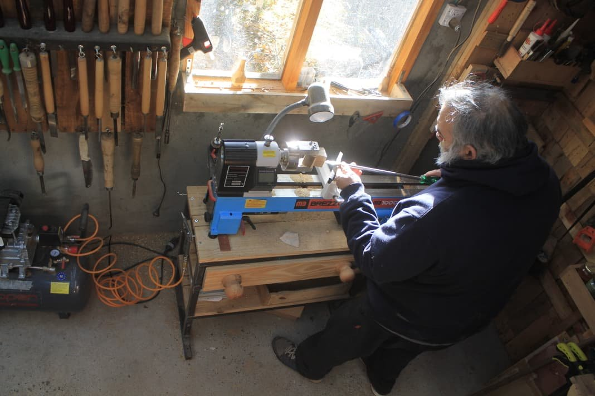
Llegué a la Patagonia en el '91 y me enamoré. En 2001 me quedé definitivamente en el Alto Río Percy con mi esposa Teresita y nuestros tres hijos. Acá trabajé como docente, en el SENASA, en el INTA. Este lugar es nuestro mundo.
En la pandemia le pedí prestada una pipa a mi cuñado y quise imitarla. Empecé a jugar en el taller. Lo que nació como un hobby se fue convirtiendo de a poco en un oficio. Hoy cada pipa me lleva entre 6 y 8 días. Las herramientas que uso —desde la fragua hasta la lijadora— las hice yo mismo.
Teresita cose las bolsitas. Los chicos, cuando vienen, se ponen a hacer boquillas y a lijar. Esto es de toda la familia, nacido en el fondo de casa, a 13 km de Esquel, en el fin del mundo.
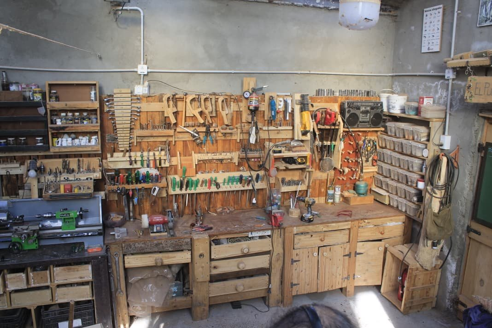
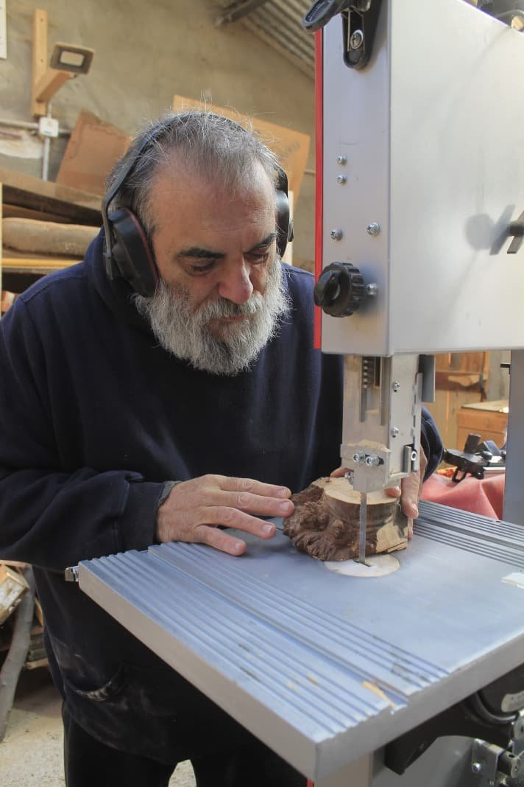
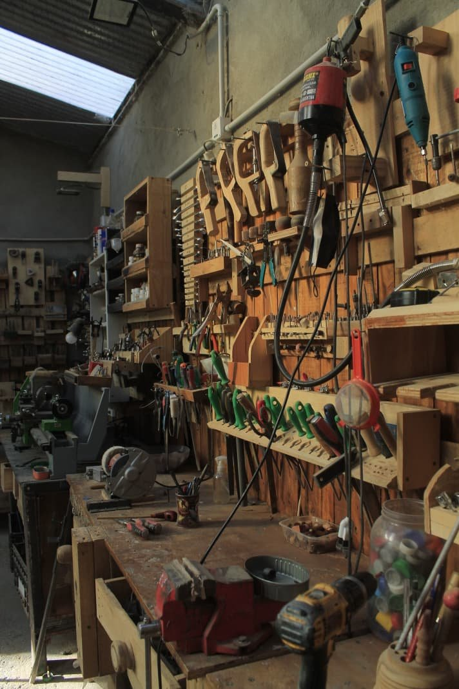
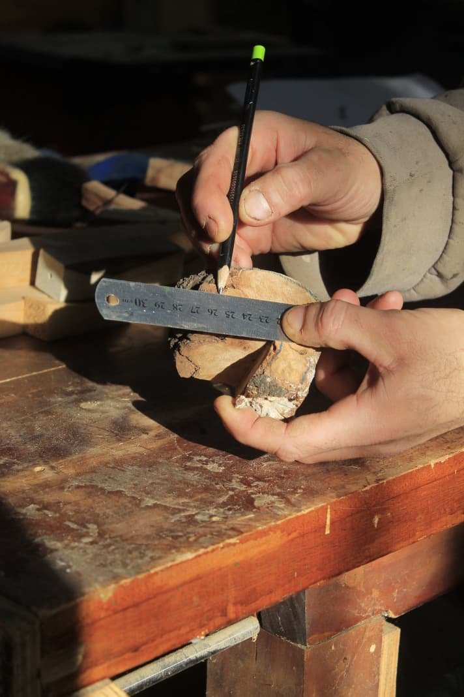
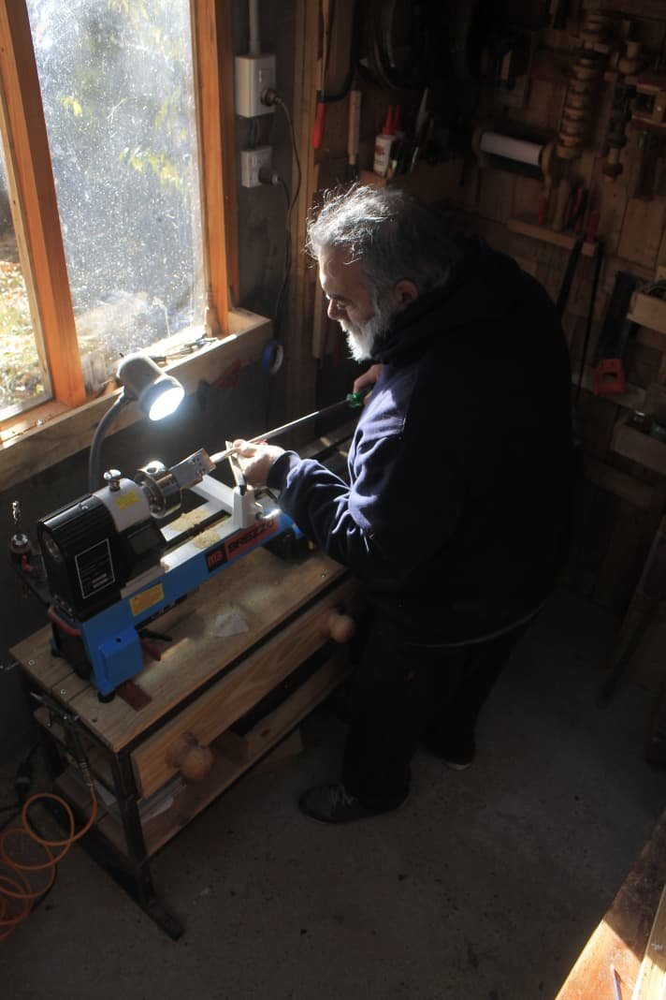
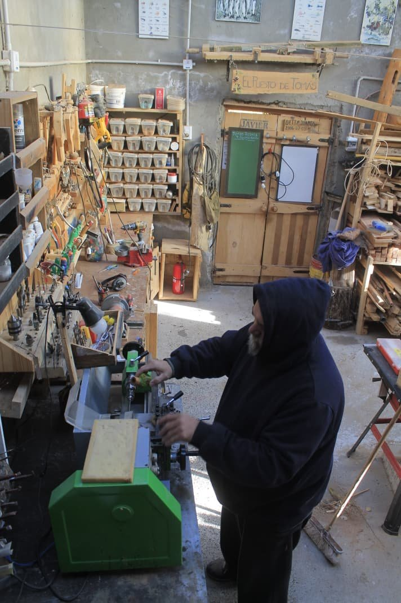
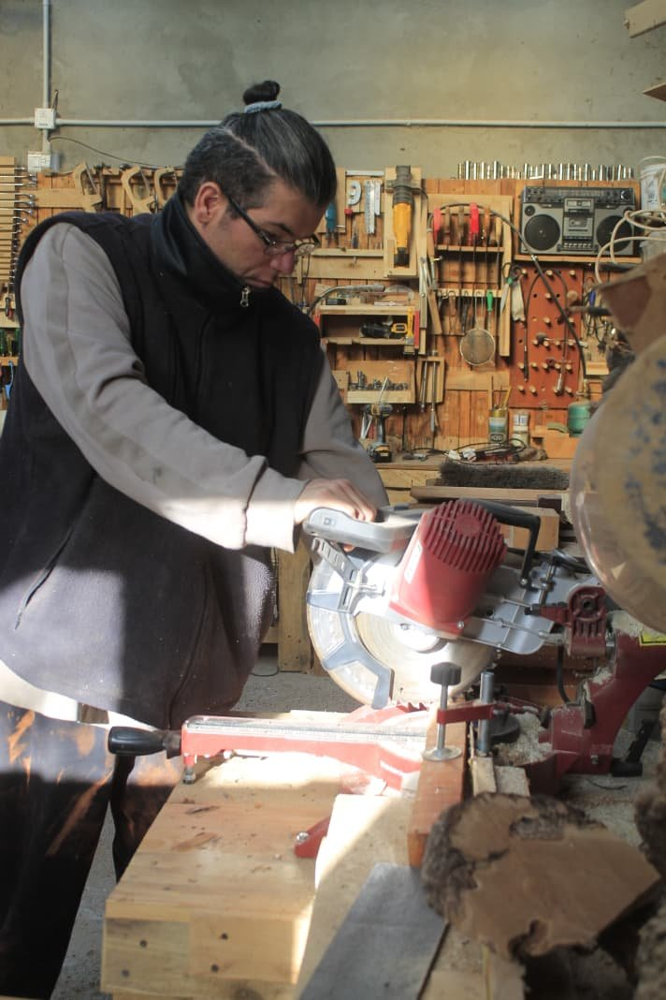
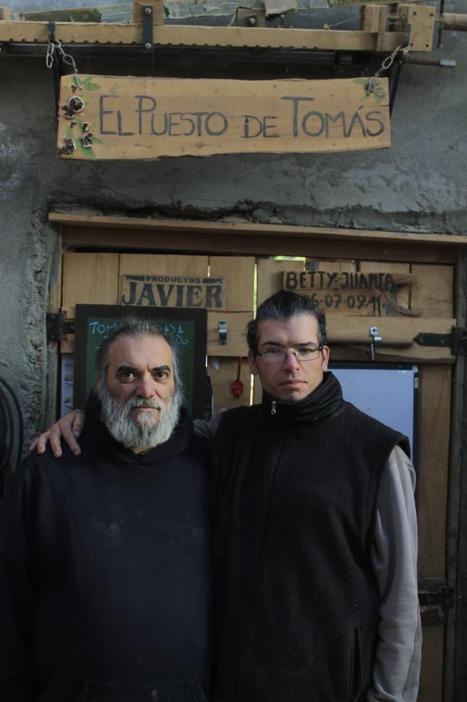
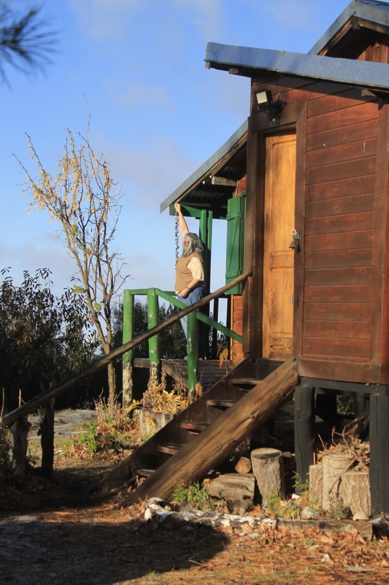
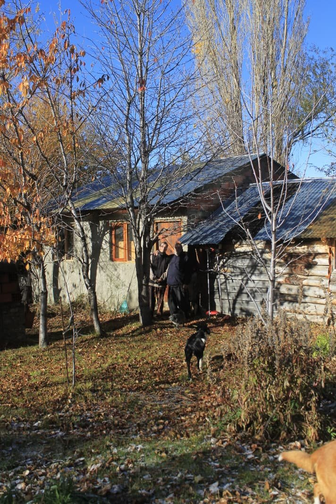
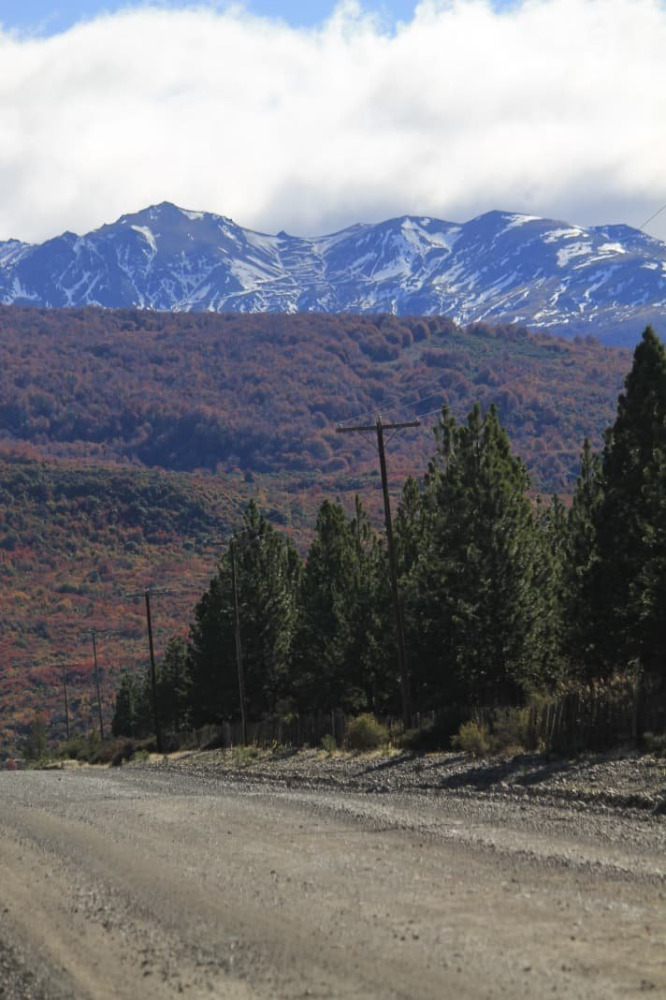